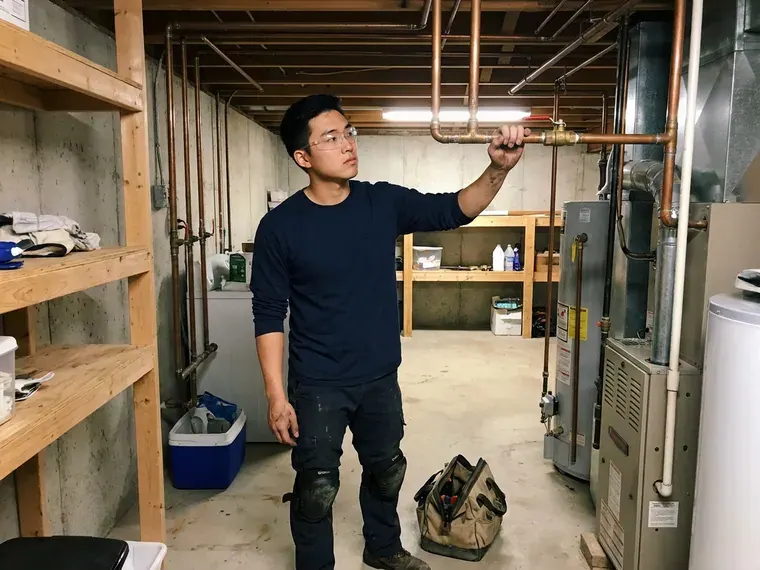
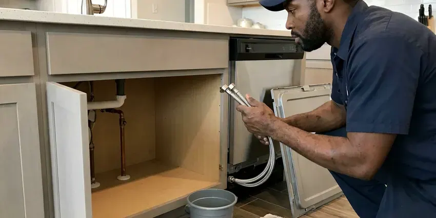
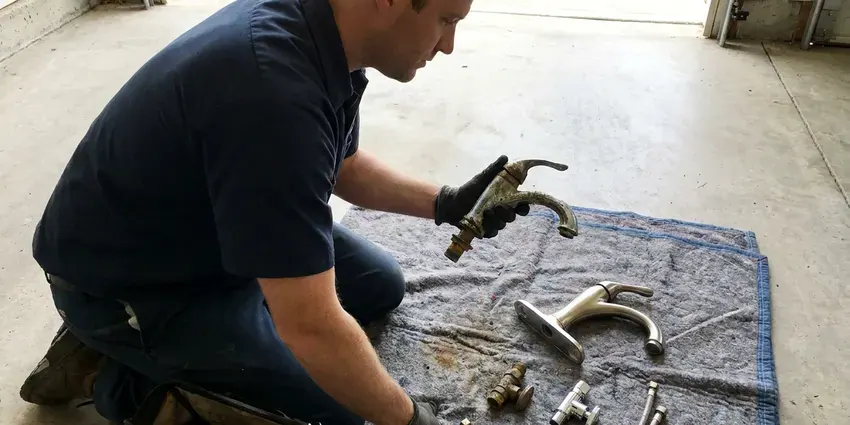

Gas Water Heater Repair in Glen Burnie, MD
Lukewarm water from a gas tank in Glen Burnie, MD usually means a failing part, not a dead heater. BVL Plumbing tracks down the cause and replaces it.
- Labor Guarantee
- Natural Gas and Propane
- Licensed Gas Fitters
- Local Techs

Gas Water Heater Repairs in Glen Burnie, MD, Done Safely.
A licensed plumber can usually be there within hours.
Gas Water Heater Repair in Glen Burnie, MD for Pilots, Burners and Gas Valves
At BVL Plumbing, a licensed plumber diagnoses the gas water heater in your Glen Burnie, MD home with a millivolt meter and a manometer before quoting anything. Pilot problems and burner trouble get the same process. You see the reading.
Some of what we do:
- Relief Valve & Pressure Fixes
- Honeywell and White-Rodgers gas control valve testing and replacement
- Burner cleaning and thermocouple replacement

Additional Plumbing Repair Services in Glen Burnie, MD
We offer expert plumbing repair services across Glen Burnie, MD to fix leaks, restore flow, and keep your system running smoothly.



Customers
Why Choose BVL Plumbing for Gas Water Heater Repair in Glen Burnie, MD?
Before any work starts, you hear what failed, why it failed and what it costs to fix, with no pressure to decide on the spot. We show you the bad part or the test reading. Questions are welcome.
- Repairs That Last, We install factory or listed parts that hold up.
- Gas Safety, We leak test every joint we open before relighting.
- Gas Leak Testing, Every gas connection we touch is tested with an electronic detector and bubble solution.
Citywide Coverage
Natural gas homes and properties on propane are both part of our service area in and around Glen Burnie, and the trucks carry orifices and parts for each fuel. No part of town is left out. Outlying addresses are covered as well.
Experienced Team
Each tech at BVL Plumbing keeps current on new gas controls and vent rules through ongoing training. They arrive ready to test, not guess. Electronic valves with flash codes get tested as carefully as old standing-pilot tanks, so the diagnosis is right the first time in your Glen Burnie home.
Safety-First Approach
After the repair, each gas joint is checked with an electronic detector and soap, and the heater runs a full cycle while we watch the flame and the draft. Only then do we sign off. The invoice lists what was tested in your Glen Burnie, MD home.
Trusted Certified Glen Burnie Plumbing Services Professionals
At BVL Plumbing, we are proud to offer certified plumbing services throughout Glen Burnie, MD. Credentials matter in this trade. Every repair, install and maintenance visit follows strict safety and quality rules, and the plumbers doing the work carry recognized industry credentials.
Call Us Now PHCC Plumbing Contractor Recognition
PHCC Plumbing Contractor Recognition Better Business Bureau (BBB) Accreditation
Better Business Bureau (BBB) Accreditation ISO 9001 Quality Management Certification
ISO 9001 Quality Management CertificationGas Water Heater Service for Glen Burnie, MD Homes
Propane Water Heater Repair in Glen Burnie
Propane and natural gas heaters look the same but burn at different pressures. Propane units need a matching orifice and a control set near 11 inches of water column. Natural gas runs closer to 7 inches, so a heater converted badly, or a regulator that drifted, gives you soot, a yellow flame and a pilot that keeps going out for no obvious reason. A manometer reading tells us the supply pressure. Wrong parts get swapped for the right ones.

Venting and Draft Repair in Glen Burnie, MD
Atmospheric tanks rely on hot exhaust rising through a metal flue with an upward slope of at least a quarter inch per foot. A loose, rusted or sagging section lets exhaust spill back into the house. The vent gets repaired. Each joint gets three screws, the connector gets proper clearance from wood and drywall, and we run the heater for several minutes with a smoke test at the draft hood to watch the exhaust go up. We do not leave with the heater spilling.
Thermostat & Gas Valve Repair in Glen Burnie, MD
Scalding water at the kitchen tap is a valve problem until proven otherwise. Some controls drift high as the sensor ages, and some dials get turned past hot. Our plumbers in Glen Burnie, MD measure the outlet temperature at the nearest fixture, compare it to the dial and replace the gas control if it is overshooting, because water at 140 degrees can burn a child's skin in a few seconds. A setting near 120 degrees works for most households.
Flammable Vapor Sensor Repair in Glen Burnie
Since about 2003, most residential gas tanks have been built with a flammable vapor ignition resistant combustion chamber. Air enters through a flame arrestor screen at the base that also keeps flame inside. When lint, dust or pet hair coats that screen, the burner starves, the chamber overheats and a thermal switch shuts the whole heater down, sometimes several times a week. We clean the screen and the chamber. We replace any tripped thermal switch.
Gas Control Valve Replacement in Glen Burnie, MD
Honeywell and White-Rodgers valves report faults with a blinking LED, and the flash count matches a chart on the label. We read the code, then test the thermopile and sensors before blaming the valve. Sometimes the valve really is bad. When the control itself is the problem, we replace it with an exact-match valve or a listed universal model, set the temperature and leak test every joint on the gas train before relighting. We leave the old valve with you if you ask.
Repairing Older Gas Water Heaters in Glen Burnie
Older tanks with standing pilots and no vapor sensor are still out there in Glen Burnie, mostly in basements and utility closets. Parts for them are simpler, and a universal thermocouple fits most. We can keep a pre-2003 heater running when the tank is sound, but we also check the draft hood, the flue connector and the gas cock, since those fittings on an old install are often original and corroded. Some old setups lack a sediment trap. One goes in while we are there.
Bradford White & Rheem Gas Water Heater Repair in Glen Burnie, MD
Bradford White and Rheem tanks make up a big share of what we repair in Glen Burnie, MD. Most Rheem gas units run a White-Rodgers or Honeywell valve with a blinking status LED. Bradford White uses its own sealed combustion design with a lint screen at the base and a thermal switch, and it needs a specific kit when the pilot assembly goes bad. Both kits ride on the truck. Genuine parts keep the warranty intact.

Tank Leaks and Pressure Issues in Glen Burnie, MD
Water on the floor near the heater does not always mean the tank is gone. Plenty of leaks come from the drain valve, the relief valve or a sweating supply nipple. A relief valve that weeps after every heating cycle usually points to high street pressure or a missing expansion tank, and both are cheaper to fix than a water heater in a Glen Burnie, MD home. Water coming from the bottom seam means the tank itself is done. No patch fixes that.
Gas Water Heater Repair Near Me in Glen Burnie, MD
Our techs work Glen Burnie every day, so they know which neighborhoods have older atmospheric tanks and which have newer power vent units. It cuts down on guesswork. Most visits start with a quick look at the vent. A heater with a disconnected flue or a blocked chimney gets fixed before anything else, since a bad vent can send carbon monoxide into living space.
Being local means BVL Plumbing can usually get to Glen Burnie, MD homes within a few hours of your call. The techs live here and begin their days close to you. A heater that quits at breakfast often gets fixed before lunch, because the truck already has the thermocouples, gas valves and relief valves that solve most no-heat calls. We usually have late-day openings too.
BVL Plumbing at a Glance
- Fully licensed plumbing team covering Glen Burnie, MD
- 24/7 emergency service with same-day scheduling
- Upfront, flat-rate pricing before work begins
- 4.8-star rated by 542+ Maryland customers
Glen Burnie Map
Glen Burnie Information
- Population
- 72,891
- Area codes
- 410/443/667
- Service area
- Glen Burnie and communities within 40 miles
- Nearby
- Severn, Dundalk, Baltimore, Columbia
Garage gas water heaters in Glen Burnie, MD collect dust and dryer lint that clog the flame arrestor and trip the thermal switch. Cleaning that screen fixes a lot of pilot outages.
Expert Services
Call BVL Plumbing for honest, reliable plumbing from people who know the trade in Glen Burnie, MD.
Our Specialized Plumbing Services in Glen Burnie, MD
At BVL Plumbing, we handle the full list of plumbing services across Glen Burnie, MD. From leak detection to full system installs, our team works fast and charges fair prices on homes and commercial properties alike. Explore our core services below:



Professional kitchen plumbing, Glen Burnie


Professional plumbing replacement, Glen Burnie


How a Gas Water Heater Repair Works in Glen Burnie, MD
Here is how we get your gas water heater back to making hot water.
Request a Quote
Call (443) 719-1650 to book your gas water heater repair. We ask what the heater is doing and set a time for a tech to visit to your Glen Burnie home.
Hands-On Inspection
The plumber tests the pilot, the gas valve, the burner and the vent. Nothing gets replaced until it tests bad.
Clear Explanation and Repair
We explain the problem plainly and quote the repair before starting. Once you approve, the tech fixes it with factory or listed parts.
Frequently Asked Questions About Gas Water Heater Repair in Glen Burnie
Expect a range of $150 to $800 in Glen Burnie, MD. Where you land depends on the part and how hard it is to reach. Simple jobs like a thermocouple sit near the bottom, while a gas control valve, a power vent blower or a flue rebuild pushes the bill toward the top end of the range. You approve the price before we start.
It does, and gas tanks feel it more than electric ones. Sediment settles right on top of the burner's heat. That layer overheats the steel, makes the popping noise you hear during a heating cycle and can shorten the life of the tank by years, especially in homes on hard water. Annual flushing slows it down.
Flush the tank once a year. Pulling a few gallons from the drain valve every quarter keeps sediment down. Have the anode rod checked every three to four years, test the relief valve by lifting the lever, and vacuum the flame arrestor screen at the base if the heater sits in a dusty garage. BVL Plumbing can do all of that in one visit. Hard water calls for more frequent flushing.
Yes, including Rheem, Ruud, Bradford White, State, American Standard and A.O. Smith. Nearly all home gas tanks use one of a few control and pilot designs. That overlap means the truck can carry thermocouples, universal valves and pilot kits that fit most of what we find in Glen Burnie, MD homes, with brand-specific parts a phone call away. Odd models take a day to source.
Rheem, Bradford White, State and Ruud are the ones we see most, along with A.O. Smith and Whirlpool tanks. Parts for most of them overlap. Bradford White has its own kits, which we stock. Off-brand or discontinued tanks can often run on listed universal parts.
A weak thermocouple is the usual cause. A plugged pilot orifice can also make the flame too small to heat it. On vapor-resistant tanks, a lint-clogged flame arrestor can starve the burner and trip the thermal switch, which looks like a pilot outage from the outside. Garage drafts can snuff out an older pilot.
Pretty much all of them. Many brands, such as Rheem, Ruud, State and Whirlpool, share common parts. Bradford White uses its own controls, and Rheem and Ruud come from the same company, so between universal kits and brand kits the truck covers most heaters in a single trip. Unusual units sometimes need a trip to the supply house.
Every repair is. We stand behind the labor, and parts keep the maker's coverage. The length of coverage for each part is listed on the invoice next to the part number, so you know what applies if the same thing fails again in a year. The office can pull up those terms anytime.
What Our Customers Say About Our Plumbing Experts

Greg S.
I manage a small strip center with six tenants. BVL Plumbing handles our annual backflow testing and fixed a recurring clog in the shared sewer line that had been backing into the nail salon. Their reports come in clean and on time.
Commercial Plumbing · Severn, MDJames P.
Our restaurant had a slow leak at the hand sink that was rotting the cabinet base. BVL Plumbing came in at six in the morning before prep, replaced the trap and both supply lines, and was packed up before my first cook clocked in.
Commercial Plumbing · Glen Burnie, MD
Carlos V.
Our house still had galvanized pipe, and upstairs the shower was a trickle. The crew repiped everything in PEX over three days and patched every drywall hole before they left. The pressure difference is night and day.
Repiping · Ellicott City, MD
Karen W.
After our third pinhole leak in copper, we stopped patching. BVL Plumbing gave us a written plan room by room and repiped the house in PEX while we stayed in it. The crew covered our floors every morning and cleaned up every night.
Repiping · Glen Burnie, MDRobert G.
The camera showed a full break in our clay sewer line near the street. BVL Plumbing replaced it with a trenchless pipe burst, so the only digging was two small pits in the yard. They let us watch the footage before and after.
Sewer Line Replacement · Baltimore, MDAngela D.
Our sump pump quit during a storm and the water was an inch from the basement carpet. BVL Plumbing put in a new pump with a battery backup that same evening. We have had two heavy rains since. It kicked on both times.
Sump Pump · Ellicott City, MD